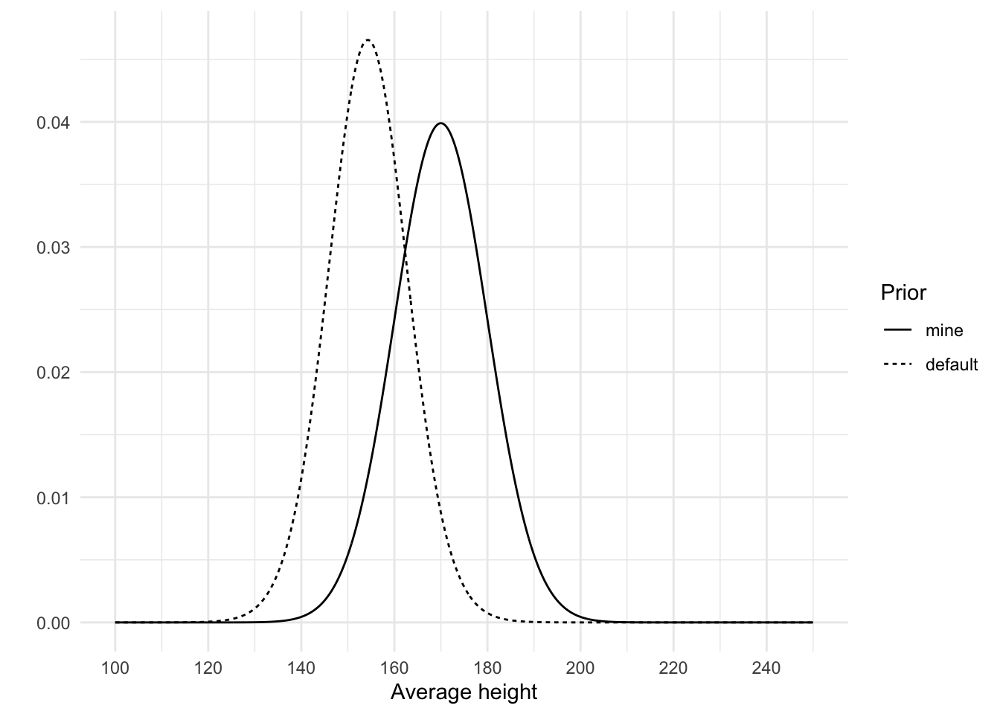
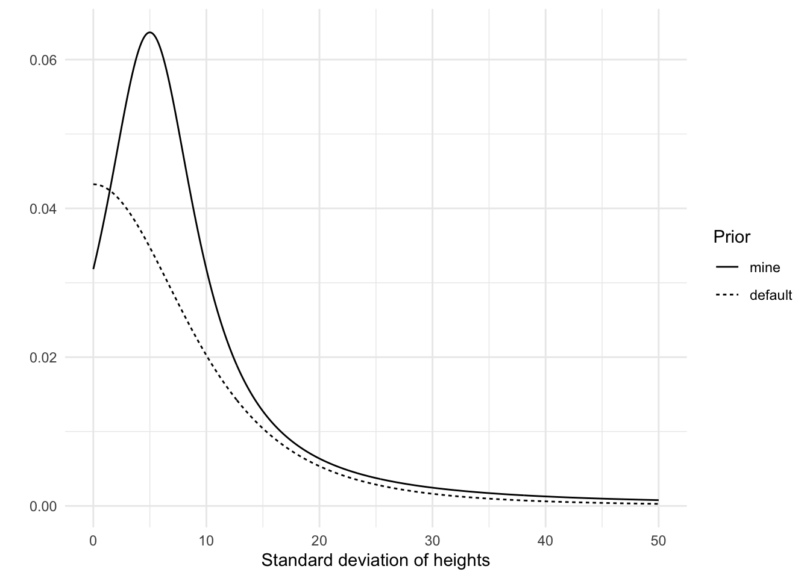
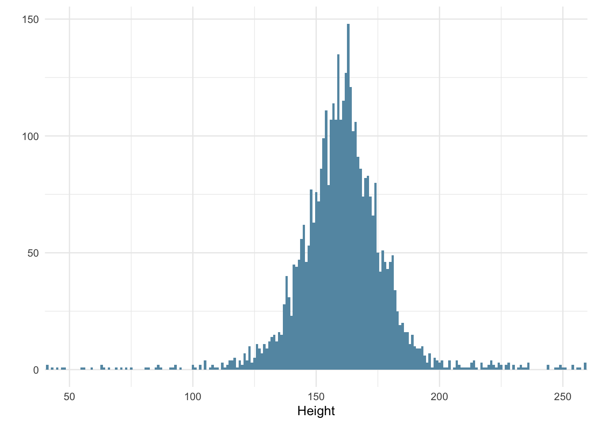
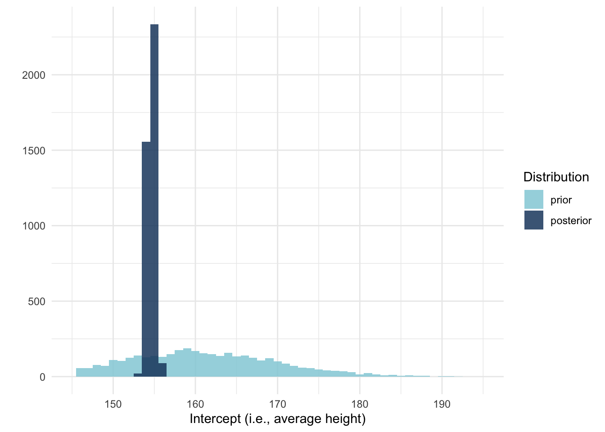
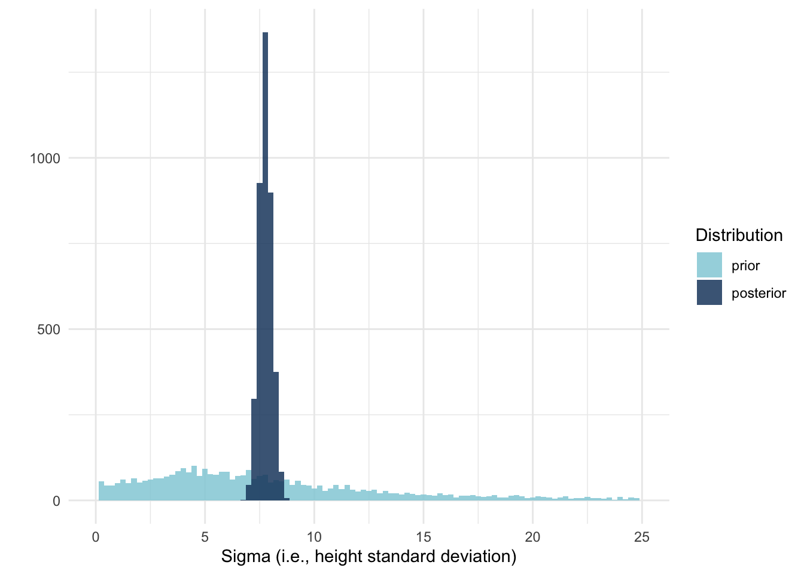
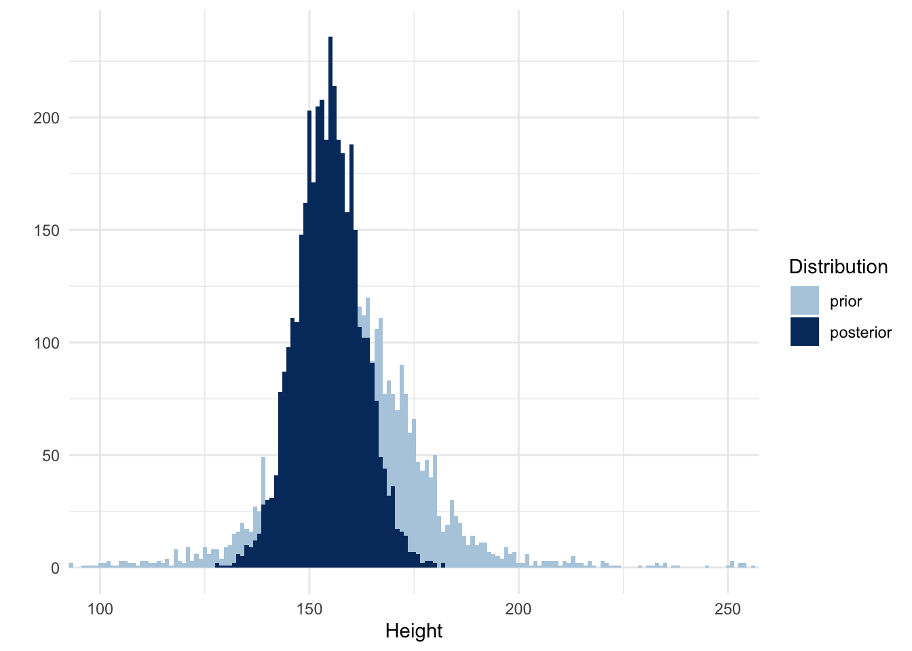

Code
library(tidyverse)
library(brms)
library(tidybayes)
library(willemverse) # remotes::install_github("willemsleegers/willemverse")
theme_set(theme_minimal())
pal_2 <- brew_colors(n = 2, begin = .6)brms to run an intercept-only regression model.
February 1, 2023
This post is the first of a series of tutorial posts on Bayesian statistics. I’m not an expert on this topic, so this tutorial is partly, if not mostly, a way for me to figure it out myself.
The goal will be to go through each step of the data analysis process and make things as intuitive and clear as possible. I’ll use the brms package to run the models and I will rely heavily on the book Statistical Rethinking by Richard McElreath.
The basic idea behind Bayesian statistics is that we start off with prior beliefs about the parameters in the model and then update those beliefs using the data. That means that for all subsequent models you need to figure out what your beliefs are before running any analyses. This is very different from frequentist statistics and probably the most off-putting part of running Bayesian analyses. However, my goal is to make this relatively easy by focusing on visualizing priors and how they change as a function of the Bayesian process. I’ll also try to come up with some methods to simplify the contruction of priors, with the goal to have them be reasonable and non-controversial.
In some cases I might not even use a prior I personally believe in. Instead I’ll use a prior that represents a particular position or skepticism so that the results of the analysis can be used to change the mind of the skeptic, rather than me changing whatever I happen to believe.
With this in mind, let’s begin.
In the code chunk below I show some setup code to get started, starting with the packages. I will use the amazing brms package to run the Bayesian models and tidybayes to visualize the results. I also load a personal package of my own, the willemverse, because it contains a function to create a color palette to use in the plots (you can skip this if you want to follow along).
After loading the packages I set the default ggplot2 theme and create a color palette consisting of two colors.
The data I’ll play with is the same data Richard McElreath uses in Chapter 4 of his amazing book Statistal Rethinking. The data consists of partial census data of the !Kung San, compiled from interviews conducted by Nancy Howell in the late 1960s. Just like in the book, I will focus only on people 18 years or older.
Rows: 544 Columns: 4
── Column specification ────────────────────────────────────────────────────────
Delimiter: ","
dbl (4): height, weight, age, male
ℹ Use `spec()` to retrieve the full column specification for this data.
ℹ Specify the column types or set `show_col_types = FALSE` to quiet this message.| height | weight | age | male |
|---|---|---|---|
| 151.765 | 47.82561 | 63 | 1 |
| 139.700 | 36.48581 | 63 | 0 |
| 136.525 | 31.86484 | 65 | 0 |
| 156.845 | 53.04191 | 41 | 1 |
| 145.415 | 41.27687 | 51 | 0 |
| 163.830 | 62.99259 | 35 | 1 |
Let’s focus the first question on the heights in the data. What are the heights of the Dobe area !Kung San?
The way to address this question is by constructing a model in which heights are regressed on only the intercept, ie., an intercept-only model. You may be familiar with the R formula for this type of model: height ~ 1.
With this formula and the data we can use brms to figure out which priors we need to set by running the get_prior() function. This is probably the easiest way to figure which priors you need when you’re just starting out using brms.
| prior | class | coef | group | resp | dpar | nlpar | lb | ub | source |
|---|---|---|---|---|---|---|---|---|---|
| student_t(3, 154.3, 8.5) | Intercept | default | |||||||
| student_t(3, 0, 8.5) | sigma | 0 | default |
The output shows us that we need to set two priors, one for the Intercept and one for sigma. brms already determined a default prior for each parameter (they are required for a Bayesian analysis), so we could immediately run an analysis if we want to but it is recommended to construct your own priors.
Also, using the get_prior() function is not the best way to think about which priors we need, though. Using the function will give us the answer, but it doesn’t really improve our understanding of why these two priors are needed. In this case I also omitted an important specification of the heights, which is that they are normally distributed (the default assumption in get_prior()). So let’s instead write down the model in a different way, which explicitly specifies how we think the heights are distributed and which parameters we need to set priors on. If we think the heights are normally distributed, we define our model like this:
\[heights_i ∼ Normal(\mu, \sigma)\]
We explicitly note that the individual heights come from a normal distribution, which is determined by the parameters \(\mu\) and \(\sigma\). This then also immediately tells us that we need to set two priors, one on \(\mu\) and one on \(\sigma\).
In our intercept-only model, the \(\mu\) parameter refers to our intercept and the \(\sigma\) parameter refers to, well, sigma. sigma is not often discussed in the literature I’m familiar with, but we’ll figure it out below. In fact, let’s discuss each of these parameters in turn and figure out what kind of prior makes sense.
The prior for the intercept indicates what I believe the average height of the !Kung San to be.
brms has set the default Intercept prior as a Student t-distribution with 3 degrees of freedom, a mean of 154.3 and a standard deviation of 8.5. That means brms starts off with a ‘belief’ that the average of the heights is 154.3, but with quite some uncertainty reflected in the standard deviation of 8.5 and the fact that the distribution is a Student t-distribution. A Student t-distribution has thicker tails compared to a normal distribution, meaning that numbers in the tails of the distribution are more likely compared to a normal distribution, at least when the degrees of freedom are low. At higher degrees of freedom, the t-distribution becomes more and more like the normal distribution. So, the thicker tails of the t-distributions means smaller and taller average heights are relatively more plausible.
But this is the default prior. brms determines this automatic prior by peeking at the data, which is not what we want to do. Instead, we should create our own.
So what do I believe the average height to be? As a Dutch person, I might be under the impression that the average height is around 175 centimeters. This is probably too tall to use as an average for the !Kung San because we’re known for being quite tall. So I think the average should be lower than 175, perhaps 170. I am not very sure, though. After all, I am far from an expert on people’s heights; I am only using my layman knowledge here. An average of 165 seems possible to me too. So let’s describe my belief in the form of a distribution in which multiple averages are possible, to varying extents. We should use a Student t-distribution with small degrees of freedom if we want to allow for the possibility of being very wrong (remember, it has thicker tails, so it assigns more probability to a wider range of average heights). We’re not super uncertain about people’s heights, though, so let’s use a normal distribution.
As we saw in defining our height model, a normal distribution requires that we set two parameters: the \(\mu\) and the \(\sigma\). The \(\mu\) we already covered (i.e., 170), so that leaves \(\sigma\). Let’s set this to 10 and see what happens by visualizing this prior. Below I plot both the default brms prior and our own with \(\mu\) = 170 and \(\sigma\) = 10.
height_prior_intercept <- tibble(
height_mean = seq(from = 100, to = 250, by = 0.1),
mine = dnorm(height_mean, mean = 170, sd = 10),
default = dstudent_t(height_mean, df = 30, mu = 154.3, sigma = 8.5),
)
height_prior_intercept <- pivot_longer(
height_prior_intercept,
cols = -height_mean,
names_to = "prior"
)
ggplot(
height_prior_intercept,
aes(x = height_mean, y = value, linetype = fct_rev(prior))
) +
geom_line() +
labs(x = "Average height", y = "", linetype = "Prior") +
scale_x_continuous(breaks = seq(100, 250, 20))
My prior indicates that I believe the average height to be higher than the default prior. In terms of the standard deviation, we both seem to be about equally uncertain about this average. Looking at this graph I think this prior of mine is not very plausible. Apparently I assign quite a chunk of plausibility to an average of 180 cm, or even 190 cm, which is very unlikely. An average of 160 cm is more plausible to me than an average of 180, so I should probably lower the mu, or use more of a skewed distribution. This is one of the benefits of visualizing the prior, it can make you think again about your prior so that you may improve on it. Based on the graph, I will change the mean of my prior to 160. I’m not very certain though, so I’ll keep my standard deviation of 10 to allow for the possibility of being quite wrong.
What about the sigma prior? What even is sigma? Sigma is the estimated standard deviation of the errors or, in other words, the standard deviation of the residuals of the model. In the simple case of an intercept-only model, this is identical to what we believe the standard deviation of the outcome to be (heights, in this case).
I think setting the standard deviation of the distribution of heights (not the mean of the heights) is quite difficult. There are parts that are easy, such as the fact that the standard deviation has to be 0 or larger (it can’t be negative), but exactly how large it should be, I don’t know.
I do know it is unlikely to be close to 0, and unlikely to be very large. That’s because I know people’s heights do vary, so I know the sigma can’t be 0. I also know it’s not super large because we don’t see people who are taller than 2 meters very often. This means the peak of our prior should be somewhere above 0, with a tail to allow higher values but not too high. We can use a normal distribution for this with a mean above 0 and a particular standard deviation, and ignore everything that’s smaller than 0 (brms automatically ignores negative values for \(\sigma\)).
As I mentioned before, there is a downside of using a normal distribution, though. Normal distributions have long tails, but there is actually very little density in those tails. If we are quite uncertain about our belief about sigma, we should use a t-distribution, or perhaps even a cauchy distribution (actually, the cauchy distribution is a special case of the t-distribution; they are equivalent if the degree of freedom is 1). The lower the degrees of freedom, the more probability we assign to higher and lower values.
A t-distribution requires three parameters: \(\mu\), \(\sigma\), and the degrees of freedom. I set \(\mu\) to 5, \(\sigma\) to 5, and the degrees of freedom to 1. Below I plot this prior and brms’s default prior to get a better grasp of these priors.
height_prior_sigma <- tibble(
height_sigma = seq(from = 0, to = 50, by = .1),
default = dstudent_t(height_sigma, df = 3, mu = 0, sigma = 8.5),
mine = dstudent_t(height_sigma, df = 1, mu = 5, sigma = 5)
)
height_prior_sigma <- pivot_longer(
height_prior_sigma,
cols = -height_sigma,
names_to = "prior"
)
ggplot(
height_prior_sigma,
aes(x = height_sigma, y = value, linetype = fct_rev(prior))
) +
geom_line() +
labs(x = "Standard deviation of heights", y = "", linetype = "Prior")
As you can see, both distributions have longish tails, allowing for the possibility of high standard deviations. There are some notable differences between the two priors, though. Our prior puts more weight on a standard deviation larger than 0, while the default prior reflects a belief in which a standard deviation of 0 is most likely. However, both priors are quite weak.
So far we have inspected each prior in isolation, but we can also use our priors to simulate heights and see if the distribution of heights makes sense. This is called a prior predictive check.
I’ll use brms to do this by running the brm() function. The brm() function is the main work horse of the brms package. It allows us to run Bayesian analyses by using a common notation style familiar to those who use R. This is also one of the reasons why the brms package is so great; it’s very easy to get started with running Bayesian analyses.
The brm() function requires a model specification and the data. Optionally, but usefully, we should also specify the response distribution (a normal distribution by default) and the priors (remember, we should not rely on the default priors).
However, we’re not ready to actually run the model just yet. Instead, we will kinda trick brms into running an analysis, but tell it to only sample from the prior using the sample_prior argument. This will give us ‘predicted’ responses based entirely on our priors and not the data.
Additionally, we also set the number of cores to speed up the analysis, a seed to make the results reproducible, and a file to store the results into so that if we run the analysis again, we can simply read the results from the file rather than running the analysis again.
The next part is a little odd because we will visualize the distribution of predicted heights by visualizing draws from this distribution (as opposed to some analytic formula that describes the distribution). By default, brms will draw 4000 draws. We could use the predict() function to do this (e.g., predict(model_height_prior), but I prefer to use the tidybayes package because it will give us back data frames that we can immediately use to create the plot.
The tidybayes function to use is add_predicted_draws(). It takes an initial data frame and it will then add draws to that data frame. Since we have nothing to predict heights with, we will need to make an almost-empty data frame. We’ll simply create a data frame with a column that specifies that this is a prior distribution. Finally, the add_predicted_draws() function will also let us name the column that will contain the predicted heights, so I do that and call it predicted_height.

So, our priors result in a normal distribution of heights ranging from about 125 cm to 200 cm. That seems fairly reasonable to me, as someone who doesn’t know too much about the heights of the !Kung San.
Now that the priors are in order we can run the model with the code below. Notice that I still sample from the prior (using sample_prior = TRUE) so we can not only visualize our posteriors later, but also the priors we have just defined.
After running the model, we first check whether the chains look like caterpillars because that indicates we have samples from the entire distribution space of the posteriors.
The chains look good.
We can call up the estimates and the 95% confidence intervals by printing the model object.
Family: gaussian
Links: mu = identity; sigma = identity
Formula: height ~ 1
Data: data (Number of observations: 352)
Draws: 4 chains, each with iter = 2000; warmup = 1000; thin = 1;
total post-warmup draws = 4000
Population-Level Effects:
Estimate Est.Error l-95% CI u-95% CI Rhat Bulk_ESS Tail_ESS
Intercept 154.62 0.41 153.83 155.41 1.00 3051 2593
Family Specific Parameters:
Estimate Est.Error l-95% CI u-95% CI Rhat Bulk_ESS Tail_ESS
sigma 7.77 0.29 7.23 8.37 1.00 3582 2683
Draws were sampled using sampling(NUTS). For each parameter, Bulk_ESS
and Tail_ESS are effective sample size measures, and Rhat is the potential
scale reduction factor on split chains (at convergence, Rhat = 1).Here we see the Intercept and sigma estimates. Apparently our posterior estimate for the Intercept is 154.62 and the estimate for \(\sigma\) is 7.77. We also see the 95% CIs, but let’s visualize these results instead.
Inspecting the chains also showed us the posterior distributions of the two parameters, but let’s create our own graphs that compare both the prior and posterior distributions. We can use the gather_draws() function from tidybayes to get draws from each parameter in a long format (each row is a draw for one of the parameters). In the code below I do that twice, once to get the draws relating to the intercept and another time for sigma. The result for each is a data frame and I’ll add a column to indicate whether the draw is from the prior or posterior.
To see which variables are in the model, use get_variables(model_height).
intercept <- model_height %>%
gather_draws(prior_Intercept, b_Intercept, ) %>%
mutate(
distribution = if_else(
str_detect(.variable, "prior"), "prior", "posterior")
)
ggplot(intercept, aes(x = .value, fill = fct_rev(distribution))) +
geom_histogram(binwidth = 1, position = "identity", alpha = .85) +
xlim(145, 195) +
labs(
x = "Intercept (i.e., average height)",
y = "",
fill = "Distribution"
) +
scale_fill_manual(values = pal_2)
Here we see that the posterior distribution of average heights is much more narrow and centered around 155 cm. So not only should we switch from thinking the average is lower than 160, we can also be much more confident about the mean.
How about sigma?
sigma <- model_height %>%
gather_draws(prior_sigma, sigma) %>%
mutate(
distribution = if_else(
str_detect(.variable, "prior"), "prior", "posterior")
)
ggplot(sigma, aes(x = .value, fill = fct_rev(distribution))) +
geom_histogram(binwidth = 0.25, position = "identity", alpha = .85) +
xlim(0, 25) +
labs(
x = "Sigma (i.e., height standard deviation)",
y = "",
fill = "Distribution"
) +
scale_fill_manual(values = pal_2)
Similarly, we see that the posterior for sigma is also much more narrow and around 8.
A final step is to conduct a posterior predictive check. Since we also conducted a prior predictive check we can plot both and compare how our overall beliefs about the distribution of heights should change as a function of the data. Below I create a new data frame with draws from the posterior, just like when I created the prior predictive check, and merge it with the prior data frame from before.
heights_posterior <- tibble(distribution = "posterior")
heights_posterior <- add_predicted_draws(
heights_posterior,
model_height,
value = "predicted_height"
)
heights <- bind_rows(heights_prior, heights_posterior)
ggplot(heights, aes(x = predicted_height, fill = distribution)) +
geom_histogram(binwidth = 1, alpha = .85, position = "identity") +
xlim(100, 250) +
labs(x = "Height", y = "", fill = "Distribution") +
scale_fill_manual(values = pal_2)
And that’s it!
In this post I showed how to run an intercept-only model in brms. It consisted of the following steps: 1. Define the model 2. Use the model to figure out which priors to set 3. Visualize the priors and create a prior predictive check to potentially tweak the priors 4. Run the model using brms 5. Inspect the output of brms, including the chains 6. Visualize the results using tidybayes
In the next post I’ll show how to add a predictor to the model.
---
title: "Bayesian tutorial: Intercept-only model"
description: "The first of a series of tutorial posts on Bayesian analyses. In this post I focus on using `brms` to run an intercept-only regression model."
date: 2023-02-01
categories:
- statistics
- tutorial
- Bayesian statistics
- regression
code-fold: true
code-tools: true
toc: true
format:
html:
df-print: kable
---
This post is the first of a series of tutorial posts on Bayesian statistics. I'm not an expert on this topic, so this tutorial is partly, if not mostly, a way for me to figure it out myself.
The goal will be to go through each step of the data analysis process and make things as intuitive and clear as possible. I'll use the `brms` package to run the models and I will rely heavily on the book [Statistical Rethinking](https://xcelab.net/rm/statistical-rethinking/ "Statistical Rethinking website") by Richard McElreath.
The basic idea behind Bayesian statistics is that we start off with prior beliefs about the parameters in the model and then update those beliefs using the data. That means that for all subsequent models you need to figure out what your beliefs are before running any analyses. This is very different from frequentist statistics and probably the most off-putting part of running Bayesian analyses. However, my goal is to make this relatively easy by focusing on visualizing priors and how they change as a function of the Bayesian process. I'll also try to come up with some methods to simplify the contruction of priors, with the goal to have them be reasonable and non-controversial.
In some cases I might not even use a prior I personally believe in. Instead I'll use a prior that represents a particular position or skepticism so that the results of the analysis can be used to change the mind of the skeptic, rather than me changing whatever I happen to believe.
With this in mind, let's begin.
## Setup
In the code chunk below I show some setup code to get started, starting with the packages. I will use the amazing `brms` package to run the Bayesian models and `tidybayes` to visualize the results. I also load a personal package of my own, the `willemverse`, because it contains a function to create a color palette to use in the plots (you can skip this if you want to follow along).
After loading the packages I set the default `ggplot2` theme and create a color palette consisting of two colors.
```{r}
#| label: setup
#| message: false
library(tidyverse)
library(brms)
library(tidybayes)
library(willemverse) # remotes::install_github("willemsleegers/willemverse")
theme_set(theme_minimal())
pal_2 <- brew_colors(n = 2, begin = .6)
```
## Data
The [data](Howell1.csv) I'll play with is the same data Richard McElreath uses in Chapter 4 of his amazing book Statistal Rethinking. The data consists of partial census data of the !Kung San, compiled from interviews conducted by Nancy Howell in the late 1960s. Just like in the book, I will focus only on people 18 years or older.
```{r}
#| label: data
#| tbl-cap: Partial census data for the Dobe area !Kung San compiled by Nancy Howell in the late 1960s.
data <- read_csv("Howell1.csv")
data <- filter(data, age >= 18)
head(data)
```
## An intercept-only model
Let's focus the first question on the heights in the data. What are the heights of the Dobe area !Kung San?
The way to address this question is by constructing a model in which heights are regressed on only the intercept, ie., an intercept-only model. You may be familiar with the R formula for this type of model: `height ~ 1`.
With this formula and the data we can use `brms` to figure out which priors we need to set by running the `get_prior()` function. This is probably the easiest way to figure which priors you need when you're just starting out using `brms`.
```{r}
#| label: get-prior
get_prior(height ~ 1, data = data)
```
The output shows us that we need to set two priors, one for the Intercept and one for sigma. `brms` already determined a default prior for each parameter (they are required for a Bayesian analysis), so we could immediately run an analysis if we want to but it is recommended to construct your own priors.
Also, using the `get_prior()` function is not the best way to think about which priors we need, though. Using the function will give us the answer, but it doesn't really improve our understanding of why these two priors are needed. In this case I also omitted an important specification of the heights, which is that they are normally distributed (the default assumption in `get_prior()`). So let's instead write down the model in a different way, which explicitly specifies how we think the heights are distributed and which parameters we need to set priors on. If we think the heights are normally distributed, we define our model like this:
$$heights_i ∼ Normal(\mu, \sigma)$$
We explicitly note that the individual heights come from a normal distribution, which is determined by the parameters $\mu$ and $\sigma$. This then also immediately tells us that we need to set two priors, one on $\mu$ and one on $\sigma$.
In our intercept-only model, the $\mu$ parameter refers to our intercept and the $\sigma$ parameter refers to, well, sigma. sigma is not often discussed in the literature I'm familiar with, but we'll figure it out below. In fact, let's discuss each of these parameters in turn and figure out what kind of prior makes sense.
## The Intercept ($\mu$) prior
The prior for the intercept indicates what I believe the *average* height of the !Kung San to be.
`brms` has set the default Intercept prior as a Student *t*-distribution with 3 degrees of freedom, a mean of 154.3 and a standard deviation of 8.5. That means `brms` starts off with a 'belief' that the *average* of the heights is 154.3, but with quite some uncertainty reflected in the standard deviation of 8.5 and the fact that the distribution is a Student *t*-distribution. A Student *t*-distribution has thicker tails compared to a normal distribution, meaning that numbers in the tails of the distribution are more likely compared to a normal distribution, at least when the degrees of freedom are low. At higher degrees of freedom, the *t*-distribution becomes more and more like the normal distribution. So, the thicker tails of the *t*-distributions means smaller and taller average heights are relatively more plausible.
But this is the default prior. `brms` determines this automatic prior by peeking at the data, which is not what we want to do. Instead, we should create our own.
So what do I believe the average height to be? As a Dutch person, I might be under the impression that the average height is around 175 centimeters. This is probably too tall to use as an average for the !Kung San because we're known for being quite tall. So I think the average should be lower than 175, perhaps 170. I am not very sure, though. After all, I am far from an expert on people's heights; I am only using my layman knowledge here. An average of 165 seems possible to me too. So let's describe my belief in the form of a distribution in which multiple averages are possible, to varying extents. We should use a Student *t*-distribution with small degrees of freedom if we want to allow for the possibility of being very wrong (remember, it has thicker tails, so it assigns more probability to a wider range of average heights). We're not super uncertain about people's heights, though, so let's use a normal distribution.
As we saw in defining our height model, a normal distribution requires that we set two parameters: the $\mu$ and the $\sigma$. The $\mu$ we already covered (i.e., 170), so that leaves $\sigma$. Let's set this to 10 and see what happens by visualizing this prior. Below I plot both the default `brms` prior and our own with $\mu$ = 170 and $\sigma$ = 10.
```{r}
#| label: height-mu-prior
#| fig-cap: Two priors for $\mu$
height_prior_intercept <- tibble(
height_mean = seq(from = 100, to = 250, by = 0.1),
mine = dnorm(height_mean, mean = 170, sd = 10),
default = dstudent_t(height_mean, df = 30, mu = 154.3, sigma = 8.5),
)
height_prior_intercept <- pivot_longer(
height_prior_intercept,
cols = -height_mean,
names_to = "prior"
)
ggplot(
height_prior_intercept,
aes(x = height_mean, y = value, linetype = fct_rev(prior))
) +
geom_line() +
labs(x = "Average height", y = "", linetype = "Prior") +
scale_x_continuous(breaks = seq(100, 250, 20))
```
My prior indicates that I believe the average height to be higher than the default prior. In terms of the standard deviation, we both seem to be about equally uncertain about this average. Looking at this graph I think this prior of mine is not very plausible. Apparently I assign quite a chunk of plausibility to an average of 180 cm, or even 190 cm, which is very unlikely. An average of 160 cm is more plausible to me than an average of 180, so I should probably lower the mu, or use more of a skewed distribution. This is one of the benefits of visualizing the prior, it can make you think again about your prior so that you may improve on it. Based on the graph, I will change the mean of my prior to 160. I'm not very certain though, so I'll keep my standard deviation of 10 to allow for the possibility of being quite wrong.
## The sigma ($\sigma$) prior
What about the sigma prior? What even is sigma? Sigma is the estimated standard deviation of the errors or, in other words, the standard deviation of the residuals of the model. In the simple case of an intercept-only model, this is identical to what we believe the standard deviation of the outcome to be (heights, in this case).
I think setting the standard deviation of the distribution of heights (not the mean of the heights) is quite difficult. There are parts that are easy, such as the fact that the standard deviation has to be 0 or larger (it can't be negative), but exactly how large it should be, I don't know.
I do know it is unlikely to be close to 0, and unlikely to be very large. That's because I know people's heights do vary, so I know the sigma can't be 0. I also know it's not super large because we don't see people who are taller than 2 meters very often. This means the peak of our prior should be somewhere above 0, with a tail to allow higher values but not too high. We can use a normal distribution for this with a mean above 0 and a particular standard deviation, and ignore everything that's smaller than 0 (`brms` automatically ignores negative values for $\sigma$).
As I mentioned before, there is a downside of using a normal distribution, though. Normal distributions have long tails, but there is actually very little density in those tails. If we are quite uncertain about our belief about sigma, we should use a *t*-distribution, or perhaps even a cauchy distribution (actually, the cauchy distribution is a special case of the *t*-distribution; they are equivalent if the degree of freedom is 1). The lower the degrees of freedom, the more probability we assign to higher and lower values.
A *t*-distribution requires three parameters: $\mu$, $\sigma$, and the degrees of freedom. I set $\mu$ to 5, $\sigma$ to 5, and the degrees of freedom to 1. Below I plot this prior and `brms`'s default prior to get a better grasp of these priors.
```{r}
#| label: height-sigma-prior
#| fig-cap: Two priors for $\sigma$
height_prior_sigma <- tibble(
height_sigma = seq(from = 0, to = 50, by = .1),
default = dstudent_t(height_sigma, df = 3, mu = 0, sigma = 8.5),
mine = dstudent_t(height_sigma, df = 1, mu = 5, sigma = 5)
)
height_prior_sigma <- pivot_longer(
height_prior_sigma,
cols = -height_sigma,
names_to = "prior"
)
ggplot(
height_prior_sigma,
aes(x = height_sigma, y = value, linetype = fct_rev(prior))
) +
geom_line() +
labs(x = "Standard deviation of heights", y = "", linetype = "Prior")
```
As you can see, both distributions have longish tails, allowing for the possibility of high standard deviations. There are some notable differences between the two priors, though. Our prior puts more weight on a standard deviation larger than 0, while the default prior reflects a belief in which a standard deviation of 0 is most likely. However, both priors are quite weak.
## Prior predictive check
So far we have inspected each prior in isolation, but we can also use our priors to simulate heights and see if the distribution of heights makes sense. This is called a prior predictive check.
I'll use `brms` to do this by running the `brm()` function. The `brm()` function is the main work horse of the `brms` package. It allows us to run Bayesian analyses by using a common notation style familiar to those who use R. This is also one of the reasons why the `brms` package is so great; it's very easy to get started with running Bayesian analyses.
The `brm()` function requires a model specification and the data. Optionally, but usefully, we should also specify the response distribution (a normal distribution by default) and the priors (remember, we should not rely on the default priors).
However, we're not ready to actually run the model just yet. Instead, we will kinda trick `brms` into running an analysis, but tell it to only sample from the prior using the `sample_prior` argument. This will give us 'predicted' responses based entirely on our priors and not the data.
Additionally, we also set the number of cores to speed up the analysis, a seed to make the results reproducible, and a file to store the results into so that if we run the analysis again, we can simply read the results from the file rather than running the analysis again.
```{r}
#| label: height-prior
model_height_prior <- brm(
height ~ 1,
data = data,
family = gaussian,
prior = c(
prior(normal(160, 10), class = "Intercept"),
prior(cauchy(5, 5), class = "sigma")
),
sample_prior = "only",
cores = 4,
seed = 4,
file = "models/model_height_prior.rds"
)
```
The next part is a little odd because we will visualize the distribution of predicted heights by visualizing draws from this distribution (as opposed to some analytic formula that describes the distribution). By default, `brms` will draw 4000 draws. We could use the `predict()` function to do this (e.g., `predict(model_height_prior)`, but I prefer to use the `tidybayes` package because it will give us back data frames that we can immediately use to create the plot.
The `tidybayes` function to use is `add_predicted_draws()`. It takes an initial data frame and it will then add draws to that data frame. Since we have nothing to predict heights with, we will need to make an almost-empty data frame. We'll simply create a data frame with a column that specifies that this is a prior distribution. Finally, the `add_predicted_draws()` function will also let us name the column that will contain the predicted heights, so I do that and call it `predicted_height`.
```{r}
#| label: prior-predictive
#| fig-cap: Prior predictive check
#| warning: false
heights_prior <- tibble(distribution = "prior")
heights_prior <- add_predicted_draws(
heights_prior,
model_height_prior,
value = "predicted_height"
)
ggplot(heights_prior, aes(x = predicted_height)) +
geom_histogram(binwidth = 1, alpha = .85) +
xlim(100, 250) +
labs(x = "Height", y = "")
```
So, our priors result in a normal distribution of heights ranging from about 125 cm to 200 cm. That seems fairly reasonable to me, as someone who doesn't know too much about the heights of the !Kung San.
## Running the model
Now that the priors are in order we can run the model with the code below. Notice that I still sample from the prior (using `sample_prior = TRUE`) so we can not only visualize our posteriors later, but also the priors we have just defined.
```{r}
#| label: intercept-model
model_height <- brm(data = data,
family = gaussian,
height ~ 1,
prior = c(
prior(normal(170, 10), class = "Intercept"),
prior(cauchy(5, 5), class = "sigma")
),
sample_prior = TRUE,
cores = 4,
seed = 4,
file = "models/model_height.rds"
)
```
After running the model, we first check whether the chains look like caterpillars because that indicates we have samples from the entire distribution space of the posteriors.
```{r}
#| label: chains
plot(model_height)
```
The chains look good.
We can call up the estimates and the 95% confidence intervals by printing the model object.
```{r}
#| label: model
summary(model_height)
```
Here we see the Intercept and sigma estimates. Apparently our posterior estimate for the Intercept is `r round(mean(as_tibble(model_height)$b_Intercept), 2)` and the estimate for $\sigma$ is `r round(mean(as_tibble(model_height)$sigma), 2)`. We also see the 95% CIs, but let's visualize these results instead.
Inspecting the chains also showed us the posterior distributions of the two parameters, but let's create our own graphs that compare both the prior and posterior distributions. We can use the `gather_draws()` function from `tidybayes` to get draws from each parameter in a long format (each row is a draw for one of the parameters). In the code below I do that twice, once to get the draws relating to the intercept and another time for sigma. The result for each is a data frame and I'll add a column to indicate whether the draw is from the prior or posterior.
To see which variables are in the model, use `get_variables(model_height)`.
```{r}
#| label: prior-posterior-mu
#| fig-cap-: Prior vs. posterior for $\mu$
#| warning: false
intercept <- model_height %>%
gather_draws(prior_Intercept, b_Intercept, ) %>%
mutate(
distribution = if_else(
str_detect(.variable, "prior"), "prior", "posterior")
)
ggplot(intercept, aes(x = .value, fill = fct_rev(distribution))) +
geom_histogram(binwidth = 1, position = "identity", alpha = .85) +
xlim(145, 195) +
labs(
x = "Intercept (i.e., average height)",
y = "",
fill = "Distribution"
) +
scale_fill_manual(values = pal_2)
```
Here we see that the posterior distribution of average heights is much more narrow and centered around `r round(mean(as_tibble(model_height)$b_Intercept))` cm. So not only should we switch from thinking the average is lower than 160, we can also be much more confident about the mean.
How about sigma?
```{r}
#| label: prior-posterior-sigma
#| fig-cap-: Prior vs. posterior for $\sigma$
#| warning: false
sigma <- model_height %>%
gather_draws(prior_sigma, sigma) %>%
mutate(
distribution = if_else(
str_detect(.variable, "prior"), "prior", "posterior")
)
ggplot(sigma, aes(x = .value, fill = fct_rev(distribution))) +
geom_histogram(binwidth = 0.25, position = "identity", alpha = .85) +
xlim(0, 25) +
labs(
x = "Sigma (i.e., height standard deviation)",
y = "",
fill = "Distribution"
) +
scale_fill_manual(values = pal_2)
```
Similarly, we see that the posterior for sigma is also much more narrow and around `r round(mean(as_tibble(model_height)$sigma))`.
A final step is to conduct a posterior predictive check. Since we also conducted a prior predictive check we can plot both and compare how our overall beliefs about the distribution of heights should change as a function of the data. Below I create a new data frame with draws from the posterior, just like when I created the prior predictive check, and merge it with the prior data frame from before.
```{r}
#| label: prior-posterior-predictive-check
#| fig-cap: Prior and posterior predictive check
#| warning: false
heights_posterior <- tibble(distribution = "posterior")
heights_posterior <- add_predicted_draws(
heights_posterior,
model_height,
value = "predicted_height"
)
heights <- bind_rows(heights_prior, heights_posterior)
ggplot(heights, aes(x = predicted_height, fill = distribution)) +
geom_histogram(binwidth = 1, alpha = .85, position = "identity") +
xlim(100, 250) +
labs(x = "Height", y = "", fill = "Distribution") +
scale_fill_manual(values = pal_2)
```
And that's it!
## Summary
In this post I showed how to run an intercept-only model in `brms`. It consisted of the following steps:
1. Define the model
2. Use the model to figure out which priors to set
3. Visualize the priors and create a prior predictive check to potentially tweak the priors
4. Run the model using `brms`
5. Inspect the output of `brms`, including the chains
6. Visualize the results using `tidybayes`
In the next post I'll show how to add a predictor to the model.